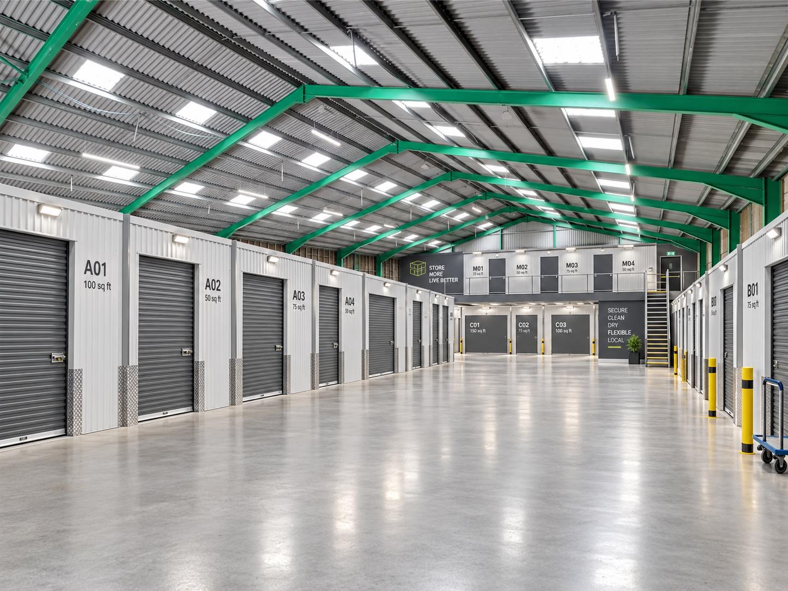
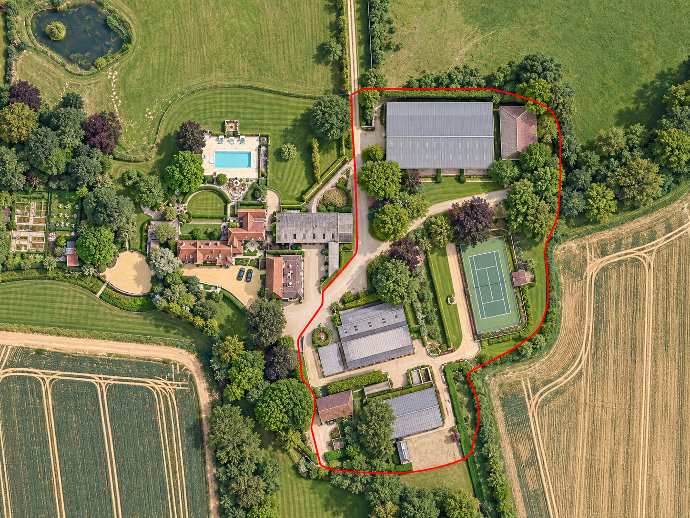
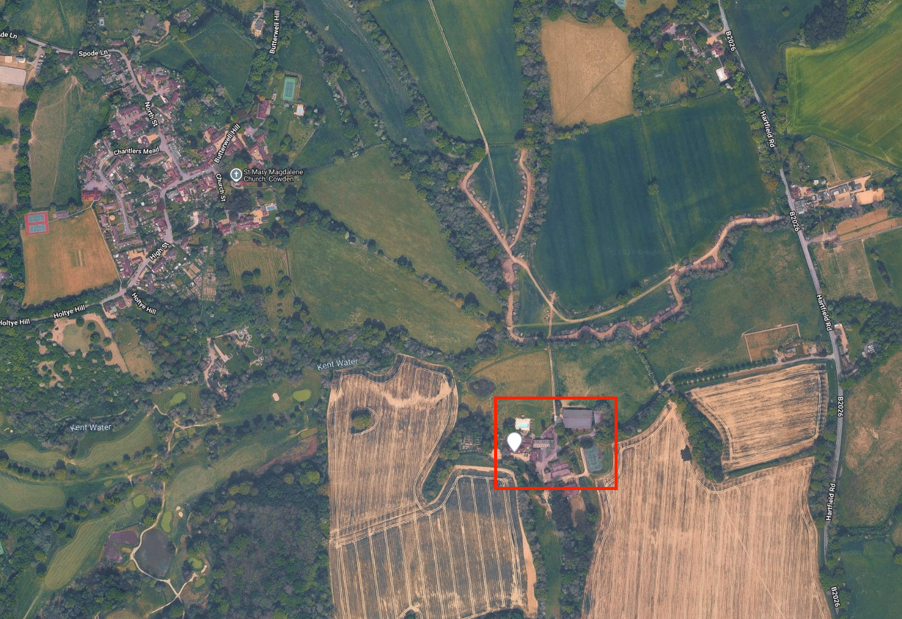
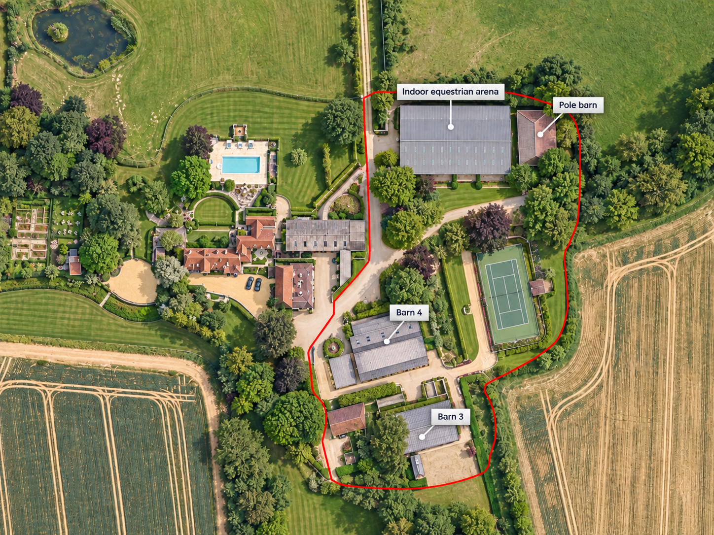
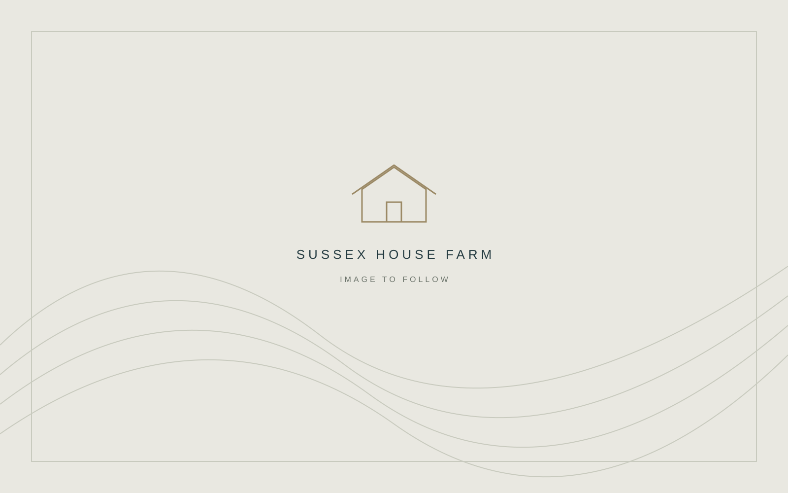
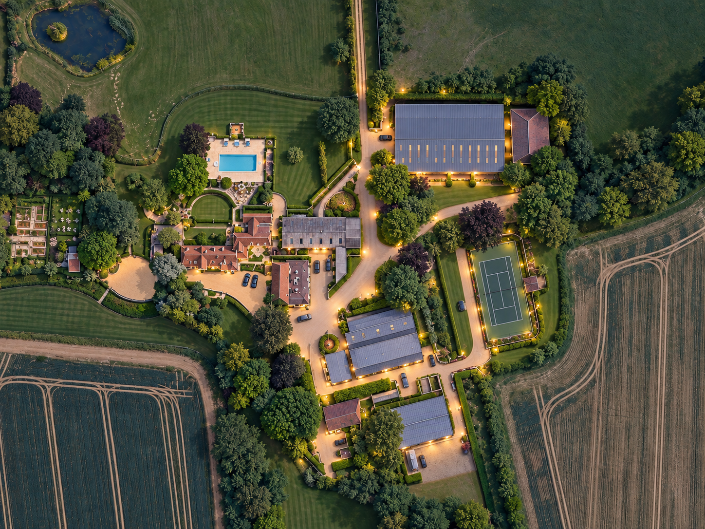

Approximately 25–150 sq ft units
Premium indoor self-storage
- Primarily within the equestrian arena
- Secure internal corridors
- CCTV and controlled access
- Potential mezzanine level
- For households, moving, downsizing and archive customers

Repositioning Opportunity
Existing rural buildings
Modern self-storage potential
Cowden / East Sussex
A unique opportunity to create a substantial rural storage destination serving the Kent and East Sussex border.
32,800
Sq ft existing footprint
30,000+
Sq ft potential lettable storage
Phased
Conversion & rollout
Sussex House Farm aerial view. Red outline indicative only.
01 — The Opportunity
Sussex House Farm is a substantial rural estate at Cowden / East Sussex, with extensive existing agricultural and equestrian buildings and approximately 32,800 sq ft of ground-floor building footprint.
The opportunity is to reposition part of the estate as a secure, easy-access self-storage and business-storage facility, creating 30,000+ sq ft of lettable storage space through internal conversion and selective mezzanine floors.
The existing structures mean significantly less new-build development is potentially required, allowing the estate’s built volume to support a new commercial use.
02 — Location & Customer Catchment
Approximately 1 mile from Cowden, around 7 miles from East Grinstead and around 8 miles from Tunbridge Wells, the estate sits between several meaningful population centres.
Convenient for Edenbridge, Hartfield, Forest Row, Dormansland and surrounding villages, it serves a broad local catchment of households, tradespeople and small businesses.

Nearby populations
| Location | Residents |
|---|---|
| Cowden | 859 |
| Hartfield | 2,251 |
| Forest Row | 4,864 |
| Edenbridge | 9,883 |
| East Grinstead | 27,783 |
45,000+
Residents across these areas alone, before including Tunbridge Wells and the wider rural catchment.
Population figures and approximate distances supplied for this overview.
03 — Existing Buildings & Development Capacity

Concept references: A — arena; B — pole barn; C — Barn 3; D — Barn 4.
The indoor equestrian arena’s clear-span construction and height make it particularly well suited to internal storage conversion.
A selective mezzanine strategy could increase total storage floor area to approximately 43,000–45,000 sq ft gross, depending on structural and planning feasibility.
This gross floor area is distinct from net lettable storage space, which allows for corridors, access and operational requirements.
| Building | Approx. footprint | Potential |
|---|---|---|
| A — Indoor equestrian arena | 12,000 sq ft | Premium indoor self-storage + mezzanine |
| B — Pole barn | 5,000 sq ft | Large drive-up / business storage + possible upper level |
| C — Barn 3 | 7,800 sq ft | Flexible larger storage units |
| D — Barn 4 | 8,000 sq ft | Flexible larger storage units |
| Total existing footprint | 32,800 sq ft | |
04 — The Storage Concept
Two complementary products combine contemporary indoor self-storage with larger, easy-access units for local businesses and commercial customers.

Approximately 25–150 sq ft units

Approximately 80–300+ sq ft units
05 — Proven Local Storage Demand
Storage King Edenbridge demonstrates that a substantial commercial storage market already exists locally. It specifically markets its Edenbridge facility towards surrounding locations including Cowden, Hartfield, Forest Row and Dormansland.
There is also a local market for lower-cost container and easy-access storage, demonstrating demand from trades, businesses and households for larger units.
The proposed Sussex House Farm concept can sit between premium urban self-storage and basic container storage.
Edenbridge facility — supplied benchmarks
Benchmarks supplied for this overview; reporting dates and source evidence should be confirmed before reliance. These are comparator figures, not achieved rents or occupancy at Sussex House Farm.
The proposed market position
Premium indoor storage
Sussex House Farm
Basic container storage
Households | Businesses | Trades | E-commerce | Moving Home
06 — Phased Development & Income Potential
The entire estate does not need to be converted immediately. A phased rollout allows the operator to establish the brand and build occupancy before committing further capital.
Phase 1
15–18k sq ft
Target lettable space
Phase 2
25k+ sq ft
Indicative expanded lettable space
Potential full scheme
32–36k+ sq ft
Potential lettable space
Phase 1 targets approximately 15,000–18,000 sq ft of lettable storage, potentially using the main indoor arena and one additional barn.
Convert additional barns once Phase 1 achieves strong occupancy, with an indicative intermediate stage of 25,000+ sq ft lettable space.
Longer-term potential of 32,000–34,000 sq ft net lettable area under a sensible mezzanine scheme, with potential to approach 36,000+ sq ft through greater mezzanine utilisation.
Illustrative potential revenue
£530,000–£635,000 p.a.
The initial appraisal suggested this region of potential stabilised annual storage revenue at approximately 80% occupancy and blended achieved rents of around £20–£24 per occupied sq ft.
Illustrative potential revenue only — not a forecast or guaranteed return. The range broadly corresponds to approximately 33,000 sq ft net lettable area at the stated occupancy and rents. Revenue is before operating costs, capital expenditure, finance costs and tax.
07 — A Rare Repositioning Opportunity

Development remains subject to detailed planning, structural, fire, access and commercial feasibility assessments.
08 — Contact & Enquiries
For further information about the estate, the proposed storage concept or a potential phased conversion, please enquire directly.
Opportunity: Rural estate repositioning for self-storage and business storage.
Location: Sussex House Farm, Cowden / East Sussex.
Enquiry Details
Contact Name
Steve Curwen
Enquiries
Request further information or discuss the estate’s self-storage, business-storage and phased development potential.